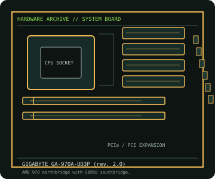

[ INDIVIDUAL COMPONENT // MOTHERBOARDS ]
GIGABYTE GA-970A-UD3P (rev. 2.0)
ATX AMD 970/SB950 board for AM3+/AM3 CPUs with DDR3, six SATA 6 Gb/s ports and legacy PCI. This entry is specifically for PCB revision 2.0.

IDENTIFICATION: Confirm the full model name, printed PCB revision and firmware identifier on the physical board. Variants with similar names may differ in CPU support, BIOS, memory and connectors.
Specifications
| Catalog subcategory | AMD Socket platforms |
|---|---|
| Exact board / model | GIGABYTE GA-970A-UD3P (rev. 2.0) |
| Era / platform | Socket AM3+ / AMD 970 + SB950, 2014 |
| CPU and socket | Socket AM3+/AM3 processors appearing on the rev. 2.0 CPU support list; verify exact CPU and BIOS revision before installation. |
| Chipset / controller | AMD 970 northbridge with SB950 southbridge. |
| Memory | Four DDR3 DIMM slots, dual-channel, up to 32 GB; validated speeds depend on CPU and overclocking profile. |
| Form factor | ATX (305 × 244 mm) |
| Expansion and storage | Two PCIe 2.0 x16-length slots (one x16 and one x4 electrical), three PCIe x1 and two PCI slots; six SATA 6 Gb/s ports. |
| Firmware compatibility | Use the exact model and board revision support page. Check CPU support and minimum BIOS before fitting a processor; do not flash firmware intended for a similarly named board. |
Compatibility and revision notes
GIGABYTE publishes support by PCB revision. The rev. 2.0 CPU list and BIOS are not interchangeable with rev. 1.x; read the PCB revision silk-screen first.
Before installation, check the manufacturer’s model-specific CPU support table and manual. Verify the power supply, cooler, chassis clearance, memory population rules and any shared PCIe or SATA lanes for the intended configuration.
Preservation and repair
Inspect the AM3+ socket and VRM area, then follow the rev. 2.0 manual for memory slots and PCIe sharing. Record the BIOS identifier before any CPU or firmware work.
For an archive record, photograph PCB labels before cleaning and note serial/date codes, firmware, accessories, known faults, repairs and test conditions. Use ESD-safe handling; do not energize a board with loose conductive hardware beneath it.
Sources & further reading
- GIGABYTE GA-970A-UD3P rev. 2.0 specificationsOfficial specification table for this PCB revision.
- GIGABYTE GA-970A-UD3P rev. 2.0 CPU supportRevision-specific processor and BIOS qualification list.
Primary manufacturer documentation is the compatibility authority. Match the cited support table and manual to the exact model and PCB revision; do not transfer firmware or CPU claims between near-name variants.